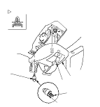
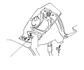
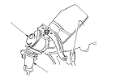
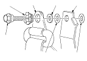

Rear Seat Belt Replacement - Supplement
Rear Center Shoulder Seat Belt
Remove the metal plate (A) from the retractor cover (B). Remove the bolt (C) and detach the clips, then remove the cover. Do not remove the toothed washer (D) from the bolt.
Remove the quarter pillar trim.

Remove the upper anchor bolt (A), and the retractor mounting bolt (B).

Remove the center seat belt (A) and retractor (B).

Install the seat belt in the reverse order of removal, and note these items:
Check that the retractor locking mechanism functions as described.
Assemble the washers, collar and bushing on the upper anchor bolt as shown.
Before installing the anchor bolt, make sure there are no twists or kinks in the center seat belt.
Upper anchor bolt construction:
